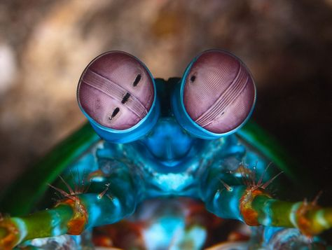
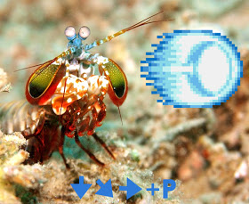

O que o Stomatopoda vê?
Visão Colorida

O stomatopoda tem em seus olhos dezesseis tipos diferentes de células cônicas sensiveis à luz.
Para você ter uma ideia do que isso significa, nós humanos só temos três tipos (as
células sensíveis ao vermelho, verde e azul ). Os cachorros só tem dois tipos de células
cônicas, às sensíveis ao azul e ao verde. A borboleta, cinco tipos diferentes de células
cônicas sensíveis à luz. Incrível não?
Nem precisa encostar? Como assim?
Dando um Hadouken nas presas

O "soco" do Stomatopoda é tão rápido que gera bolhas embaixo da água por
um processo conhecido como supercavitação. Essas bolhas ao entrarem em colapso
produzem uma onda de choque capaz de matar as presas do Stomatopoda, mesmo que
ele erre o alvo.